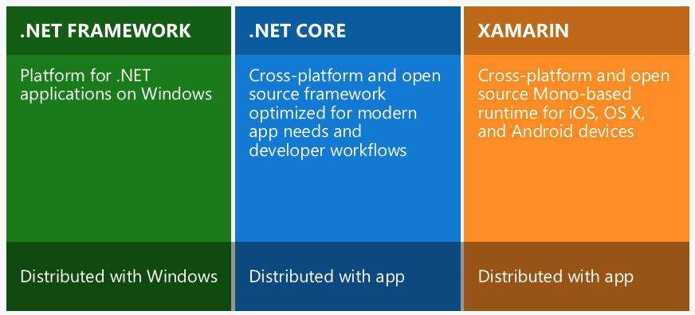

What's the difference between .NET Core, .NET Framework, and Xamarin?
Microsoft now has .NET Core, .NET Framework and Xamarin (Mono) in its family.
It seems to be a lot of overlap here. What's the difference between these types of .NET Platforms? When should I choose to use .NET Core in my project, instead of .NET Framework or Xamarin?
Answer
You should use .NET Core, instead of .NET Framework or Xamarin, in the following 6 typical scenarios according to the documentation here.
1. Cross-Platform needs
Clearly, if your goal is to have an application (web/service) that should be able to run across platforms (Windows, Linux and MacOS), the best choice in the .NET ecosystem is to use .NET Core as its runtime (CoreCLR) and libraries are cross-platform. The other choice is to use the Mono Project.
Both choices are open source, but .NET Core is directly and officially supported by Microsoft and will have a heavy investment moving forward.
When using .NET Core across platforms, the best development experience exists on Windows with the Visual Studio IDE which supports many productivity features including project management, debugging, source control, refactoring, rich editing including Intellisense, testing and much more. But rich development is also supported using Visual Studio Code on Mac, Linux and Windows including intellisense and debugging. Even third party editors like Sublime, Emacs, VI and more work well and can get editor intellisense using the open source Omnisharp project.
2. Microservices
When you are building a microservices oriented system composed of multiple independent, dynamically scalable, stateful or stateless microservices, the great advantage that you have here is that you can use different technologies/frameworks/languages at a microservice level. That allows you to use the best approach and technology per micro areas in your system, so if you want to build very performant and scalable microservices, you should use .NET Core. Eventually, if you need to use any .NET Framework library that is not compatible with .NET Core, there’s no issue, you can build that microservice with the .NET Framework and in the future you might be able to substitute it with the .NET Core.
The infrastructure platform you could use are many. Ideally, for large and complex microservice systems, you should use Azure Service Fabric. But for stateless microservices you can also use other products like Azure App Service or Azure Functions.
Note that as of June 2016, not every technology within Azure supports the .NET Core, but .NET Core support in Azure will be increasing dramatically now that .NET Core is RTM released.
3. Best performant and scalable systems
When your system needs the best possible performance and scalability so you get the best responsiveness no matter how many users you have, then is where .NET Core and ASP.NET Core really shine. The more you can do with the same amount of infrastructure/hardware, the richer the experience you’ll have for your end users – at a lower cost.
The days of Moore’s law performance improvements for single CPUs does not apply anymore; yet you need to do more while your system is growing and need higher scalability and performance for everyday’ s more demanding users which are growing exponentially in numbers. You need to get more efficient, optimize everywhere, and scale better across clusters of machines, VMs and CPU cores, ultimately. It is not just a matter of user’s satisfaction; it can also make a huge difference in cost/TCO. This is why it is important to strive for performance and scalability.
As mentioned, if you can isolate small pieces of your system as microservices or any other loosely-coupled approach, it’ll be better as you’ll be able to not just evolve each small piece/microservice independently and have a better long-term agility and maintenance, but also you’ll be able to use any other technology at a microservice level if what you need to do is not compatible with .NET Core. And eventually you’d be able to refactor it and bring it to .NET Core when possible.
4. Command line style development for Mac, Linux or Windows.
This approach is optional when using .NET Core. You can also use the full Visual Studio IDE, of course. But if you are a developer that wants to develop with lightweight editors and heavy use of command line, .NET Core is designed for CLI. It provides simple command line tools available on all supported platforms, enabling developers to build and test applications with a minimal installation on developer, lab or production machines. Editors like Visual Studio Code use the same command line tools for their development experiences. And IDE’s like Visual Studio use the same CLI tools but hide them behind a rich IDE experience. Developers can now choose the level they want to interact with the tool chain from CLI to editor to IDE.
5. Need side by side of .NET versions per application level.
If you want to be able to install applications with dependencies on different versions of frameworks in .NET, you need to use .NET Core which provides 100% side-by side as explained previously in this document.
6. Windows 10 UWP .NET apps.
In addition, you may also want to read:
- When should I NOT use .NET Core?
- When should I still use .NET Framework 4.x, instead of .NET Core?
- When should I use Xamarin, instead of .NET Core?
Suggest
This is how Microsoft explains it:

.NET Framework is the "full" or "traditional" flavor of .NET that's distributed with Windows. Use this when you are building a desktop Windows or UWP app, or working with older ASP.NET 4.6+.
.NET Core is cross-platform .NET that runs on Windows, Mac, and Linux. Use this when you want to build console or web apps that can run on any platform, including inside Docker containers. This does not include UWP/desktop apps currently.
Xamarin is used for building mobile apps that can run on iOS, Android, or Windows Phone devices.
Xamarin usually runs on top of Mono , which is a version of .NET that was built for cross-platform support before Microsoft decided to officially go cross-platform with .NET Core. Like Xamarin, the Unity platform also runs on top of Mono.
A common point of confusion is where ASP.NET Core fits in. ASP.NET Core can run on top of either .NET Framework (Windows) or .NET Core (cross-platform), as detailed in this answer: Difference between ASP.NET Core (.NET Core) and ASP.NET Core (.NET Framework)